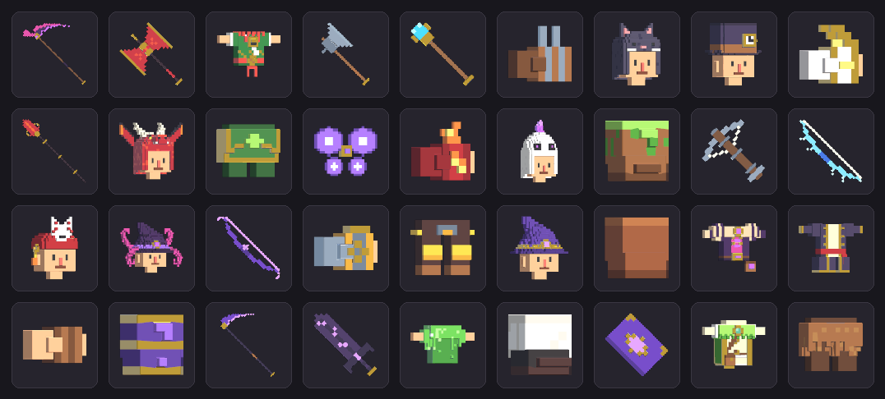
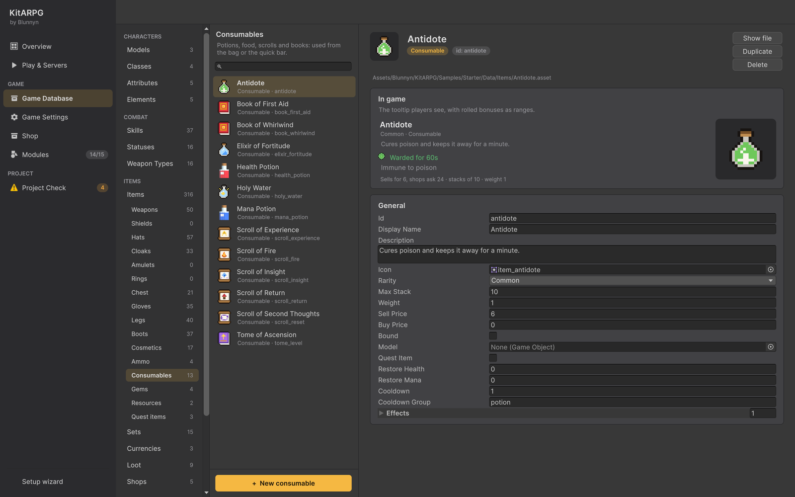
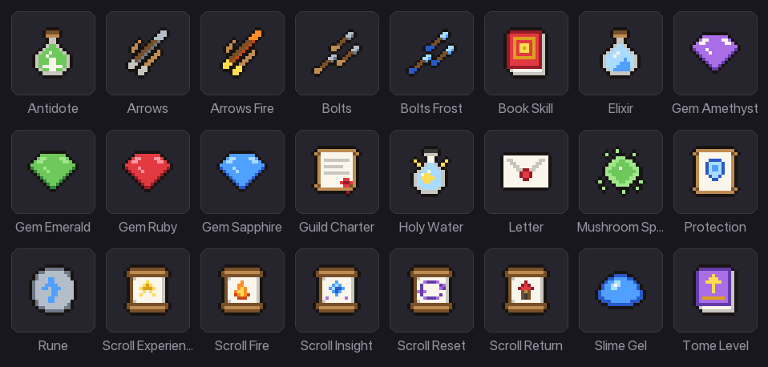

物品
物品是所有能放进背包的东西：材料、任务物品、消耗品、装备、武器、弹药和宝石。本页介绍每个物品都有的内容、物品类型、消耗品及每种物品效果、物品副本如何运作，以及在 MMO 中物品目录如何进入数据库。
物品如何运作
物品资源说明一个物品是什么：它的名称、图标、稀有度、堆叠上限、重量、价格以及作用。玩家拥有的副本只保存物品 id 以及属于该副本的内容：数量、强化等级、随机加成、宝石以及是否绑定。因此编辑物品资源会立即改变游戏中的每个副本。
每个副本都有一个在创建时（作为掉落、从商店购买、作为初始物品）生成的唯一 id（uid）。同一副本永远不能被保存两次，套件正是借此防止物品复制。
物品类型

| 类型 | 创建菜单 | 是什么 | 页面 |
|---|---|---|---|
Material（ItemData） |
Create > KitARPG > Items > Material | 只放在背包里的东西：资源、符文、掉落物、任务物品。 | 本页 |
Armor（EquipmentData） |
Create > KitARPG > Items > Armor | 穿戴在某个栏位上的装备：帽子、胸甲、手套、腿甲、靴子、背部、戒指、护身符、盾牌。 | 装备 |
Weapon（WeaponData） |
Create > KitARPG > Items > Weapon | 持于主手（或副手）的装备，带有伤害取值和武器类型。 | 装备 |
Consumable（ConsumableData） |
Create > KitARPG > Items > Consumable | 使用后消耗：药水、食物、卷轴、书。 | 本页 |
Ammo（AmmoData） |
Create > KitARPG > Items > Ammo | 箭、弩矢等，穿戴在弹药栏位中并由攻击消耗。 | 装备 |
Gem（GemData） |
Create > KitARPG > Items > Gem | 镶嵌在装备的镶孔中以获得其加成。 | 套装、强化与镶孔 |
在代码中，物品通过接口（IItem、IEquippable、IWeapon、IUsable、IConsumable）处理，因此新的物品类型只需实现适用于它的接口。参见代码中的物品效果。
物品在编辑器中的位置
Game Database > Items > Items 列出每个物品。它会展开子分类，方便你快速找到东西：
| 子分类 | 列出什么 |
|---|---|
| Weapons | 所有武器。New weapon 会提供你数据库中的武器类型。 |
| Shields | 副手装备。 |
| Hats | Head 栏位装备。 |
| Cloaks | Back 栏位装备：披风、背包、翅膀。 |
| Amulets | Amulet 栏位装备。 |
| Rings | Ring 栏位装备。角色可戴两枚。 |
| Chest | Chest 栏位装备。 |
| Gloves | Hands 栏位装备。 |
| Legs | Legs 栏位装备。 |
| Boots | Feet 栏位装备。 |
| Cosmetics | 只改变外观的装备。 |
| Ammo | 箭、弩矢以及武器消耗的任何东西。 |
| Consumables | 药水、食物、卷轴和书。 |
| Gems | 用于镶孔的宝石。 |
| Resources | 普通材料（非任务物品）。 |
| Quest items | 标记为任务物品的物品。 |
在子分类中创建的新物品已为该分类设置好：新帽子带有 Head 栏位，新任务物品被标记为任务物品并绑定，新时装被标记为时装且不可强化。
物品页面以玩家看到的提示框开头（随机加成显示为范围），然后是一行价格、堆叠和重量，以及图标。之后是分组到卡片中的字段。
物品图标：手动设置 Icon，或使用 KitARPG > Render Missing Item Icons 为每个有 Model 但没有图标的物品拍照。盔甲只拍摄其所在区域，武器以对角方向拍摄。没有模型的物品显示其名称。
每个物品都有的字段
| 字段 | 作用 | 默认值 |
|---|---|---|
Id（id） |
随每个副本保存。创建物品时由文件名填入，之后保持不变。修改它会让玩家拥有的每个副本失去对应。 | 来自文件名 |
Display Name（displayName） |
玩家看到的名称。留空则使用文件名。 | 空 |
Description（description） |
提示框底部的文字。 | 空 |
Icon（icon） |
显示在背包、快捷栏、商店和提示框中。 | None |
Rarity（rarity） |
Common、Magic、Rare、Epic 或 Legendary。为名称和边框着色，并提高分解该装备所得。 | Common |
Max Stack（maxStack） |
一个背包格子能放多少个。从创建菜单制作的装备从 1 开始，弹药从 500 开始。 | 99 |
Weight（weight） |
背包按重量限制时单个的重量。穿戴的物品也计入。 | 1 |
Sell Price（sellPrice） |
开启向 NPC 出售时，NPC 为一个支付的金币。 | 1 |
Buy Price（buyPrice） |
商店出售一个所要求的金币。0 表示出售价格的四倍（至少 1）。商店条目可以设置自己的价格。 |
0 |
Bound（bound） |
不能交易、邮寄、放入公会仓库或在市场上架。任务物品遵循同样的规则。 | Off |
Model（model） |
用于图标和地面显示。对于装备，是模块化部件（网格名为 <Set>_<Region>）或手持的道具。 |
None |
Quest Item（questItem） |
显示为任务物品。商店永远不会收购。 | Off |
向 NPC 出售默认是关闭的（Game Settings 的 Economy 部分，Players Sell To Npcs）。关闭时，Sell Price 仍决定默认的购买价格（出售价格的四倍）。参见 NPC 商店。
物品如何放入背包（格子或重量、堆叠、拆分）见背包与仓库。
消耗品


消耗品从背包（右键或物品菜单）或快捷栏使用，每次使用消耗一个。
| 字段 | 作用 | 默认值 |
|---|---|---|
Restore Health（restoreHealth） |
使用时恢复的生命值。 | 0 |
Restore Mana（restoreMana） |
使用时恢复的法力值。 | 0 |
Cooldown（cooldown） |
同一冷却组中的任何物品能再次使用前的秒数。 | 1 |
Cooldown Group（cooldownGroup） |
同一组中的物品共享一个冷却。留空则以物品自身的 id 作为其组。 | potion |
Effects（effects） |
它还做什么。物品效果的列表，从菜单中选择（见下文）。 | 空 |
消耗品只有在会产生作用时才能使用：
- 只恢复生命值的药水在满血时无法使用（也不会被消耗）。
- 任何效果运行之前，每个效果都会先被检查。如果有一个效果说不行（等级已达上限时的等级典籍、职业无法阅读的技能书），就什么都不会发生，物品也会保留。原因会显示在角色头顶，即使是在背包关闭时从快捷栏使用的。
- 死亡的角色不能使用物品。
物品效果
要添加效果，在 Effects 上按 +，然后在新条目上按 Pick a type。菜单列出项目中的每种物品效果，包括你自己的（参见代码中的物品效果）。Change type 可以更换它。
Experience
给予经验：一个固定数量加上当前等级所需经验的一部分。
| 字段 | 作用 | 默认值 |
|---|---|---|
Amount（amount） |
给予的经验。 | 100 |
Share Of Level（shareOfLevel） |
当前等级所需经验的比例，从 0 到 1，额外叠加。0.1 给予一级的 10%。 |
0 |
在最高等级时无法使用（"You're at the highest level"）。
示例：Scroll of Experience，50 经验加上一级的 10%。
Level
把角色等级提升整数级，有上限。
| 字段 | 作用 | 默认值 |
|---|---|---|
Levels（levels） |
给予的等级数。至少为 1。 | 1 |
Up To Level（upToLevel） |
达到或高于此等级的角色无法使用，且它永远不会把等级提升到超过此值。0 表示一直可用到最高等级。 |
0 |
示例：Tome of Ascension，提升一级，仅限 10 级以下。
Learn Skill
传授一个技能，或把角色已会的技能提升到某个等级，无需花费技能点。适用于角色职业以外的技能，遵循技能自身的学习规则（Teachable、Learnable By、Learn Level、Requires）。参见学习职业以外的技能。
| 字段 | 作用 | 默认值 |
|---|---|---|
Skill（skill） |
要传授的技能。 | None |
Rank（rank） |
传授的等级。低于它的已会技能会被提升到该等级。 | 1 |
提示框列出可以学习它的职业、所需等级和所需技能，阅读者不满足时以橙色显示。新的主动技能会放到第一个空闲的快捷栏按键上。
示例：Book of First Aid（任何职业，3 级）和 Book of Whirlwind（6 级、Cleave 等级 2 的战士）。
Points
给予可分配的属性点和技能点。
| 字段 | 作用 | 默认值 |
|---|---|---|
Attribute Points（attributePoints） |
增加的属性点。 | 0 |
Skill Points（skillPoints） |
增加的技能点。 | 1 |
来自物品的技能点与升级获得的技能点分开保存（bonusSkillPoints），因此在职业重新平衡后仍然保留。
示例：Scroll of Insight，1 个技能点和 2 个属性点。
Reset Attributes
退还角色分配过的所有属性点，供重新分配。没有字段。没有分配过点数时无法使用。
示例：Scroll of Second Thoughts，由 Mira 以 500 金币出售。
Cast Skill
像使用者会该技能一样施放它，不消耗法力也不触发技能的冷却。友方技能作用于使用者；敌对技能作用于范围内最近的敌人。
| 字段 | 作用 | 默认值 |
|---|---|---|
Skill（skill） |
施放的技能。 | None |
Rank（rank） |
施放时的等级。至少为 1。 | 1 |
示例：Scroll of Fire，对最近的敌人施放 3 级 Fire Bolt，任何职业可用。
Status
为使用者施加一个状态：药剂、护盾、免疫。
| 字段 | 作用 | 默认值 |
|---|---|---|
Status（status） |
该状态。 | None |
Duration（duration） |
秒数。 | 30 |
Level（level） |
状态生效时的等级；其等级值（每跳伤害、治疗、护盾）使用该等级。至少为 1。 | 1 |
示例：Elixir of Fortitude（2 级 Shielded，持续 60 秒）、Holy Water（Invulnerable 3 秒，在自己的组中有 60 秒冷却）、Antidote（Warded，免疫中毒，持续 60 秒）。
Travel
把使用者带到某张地图的某个点：回城卷轴。如果传送失败，物品会被退还。
| 字段 | 作用 | 默认值 |
|---|---|---|
Map（map） |
目的地。 | None |
Position（position） |
该地图上的点。 | 0, 0, 0 |
示例：Scroll of Return，返回 Town。
制作消耗品
本例制作一瓶 Greater Health Potion，恢复 150 生命值并附带短暂的恢复效果。
- 打开 Game Database > Items > Consumables 并按 + New consumable。新条目名为 New consumable，id 为
new_consumable。在 Id 中输入greater_health_potion，在 Display Name 中输入Greater Health Potion。如果愿意，也可以重命名文件；id 不会随文件重命名而改变。 - 把 Rarity 设为 Magic，Max Stack 设为 20，Weight 设为 1，Sell Price 设为 15。
- 把 Restore Health 设为 150。
- 保持 Cooldown Group 为
potion，使它与其他药水共享冷却，并把 Cooldown 设为 2。 - 在 Effects 中按 +、Pick a type 并选择 Status。把 Status 设为 Regeneration，Duration 设为 5，Level 设为 2。
- 设置一个 Icon，或给它一个 Model 并运行 KitARPG > Render Missing Item Icons。
- 让它可以获得：把它加入某个商店的列表（NPC 商店）或某个怪物的掉落表（掉落）。
现在提示框显示 "Restores 150 health"，然后是 Regeneration 及其每秒治疗量和持续时间。
材料和任务物品
普通物品（ItemData）本身不做任何事。可用于：
- 资源和符文。 示例中的 Forge Rune 用于在锻造台支付强化费用，来自分解装备。参见套装、强化与镶孔。
- 任务物品。 勾选 Quest Item（通常还有 Bound）。任务可以要求玩家收集它们，商店永远不会收购它们。参见任务。
- 花费。 条件和动作可以检查并收取任何物品（条件与动作）。
单人模式和 MMO
物品在两种模式下的行为相同；地图服务器（或单人游戏）决定一切，客户端只发出请求。
保存副本。
- 在 MMO 中，每个副本都是
item_instances表中的一行，恰好有一个所有者：角色、账号仓库、公会仓库、邮件、收税员或市场挂单。在所有者之间移动副本总是经由 Central 在数据库事务中完成，因此物品无法被复制。每个副本的值（随机加成、强化等级、宝石）保存在该行的Extra列中。 - 在单人模式中，副本保存在本地存档中角色的 JSON 内。
目录。 在 MMO 中，数据库还有 items 和 skills 表，即每个副本所指向的目录。Unity 把目录导出到 gamedata.json 中（id、名称、分类、稀有度、需求等级、堆叠、出售和购买价格、是否绑定、是否任务物品），Login 每次启动时都会把它复制到这些表中。
- Play & Servers 在启动服务前导出
gamedata.json。对于构建和 Docker，使用 KitARPG > Export Game Data for Services。 - 你在这些表中手动编辑的任何内容都会在下次 Login 启动时被覆盖。
- 从游戏中移除的物品不会从目录中删除：它会被标记为已停用，因为可能仍有副本指向它。
- 目录中不认识的物品副本永远不会进入数据库。地图服务器会保留它，并在 Login 拿到新的导出后重试。
添加新物品后，在 MMO 中测试之前先重启服务（或重新导出）。在 Login 拿到新目录之前，新物品无法保存到数据库。
提示
- 不应连续使用的消耗品给它们相同的 Cooldown Group，应该可以叠加使用的给它们各自的组。
- 对不希望被出售或交易的任务奖励使用 Bound。
- 在经验卷轴上使用 Share Of Level，使它们在每个等级都有用。
常见错误
- 药水无法使用。 角色满血，而该药水只恢复生命值。这是有意设计的。
- 技能书没有任何效果。 技能的 Teachable 关闭了，职业不在 Learnable By 中，等级太低，或者缺少所需技能。原因会显示在角色头顶。
- 更新后玩家丢失了物品。 某个物品的 id 被修改了。改回旧的 id。
- 新物品在 MMO 中消失。 Login 的目录已过期。重新导出。